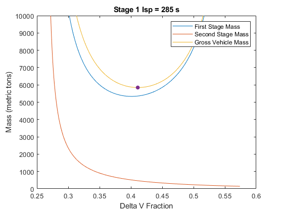

delta1 = 0.08;
delta2 = 0.08;
payload = 26000;
Isp_s2 = 366;
Isp = [327, 366, 311, 269, 285];
X=0:0.001:1;
for isp = 1:length(Isp)
m_s1 = [];
m_s2 = [];
m_0 = [];
min_gross_mass = realmax;
for i = 1:length(X)
[m_in1, m_in2, m_pr1, m_pr2, m0] = mass_function(Isp(isp), Isp_s2, X(i), delta1, delta2);
m_s1 = [m_s1 (m_pr1 + m_in1)];
m_s2 = [m_s2 (m_pr2 + m_in2)];
m_0 = [m_0 m0];
if m_s1(i) > 0 && m_s2(i) > 0 && m_0(i) < min_gross_mass
min_gross_mass = m_0(i);
x_min = X(i);
end
end
m_s1 = m_s1/1000;
m_s2 = m_s2/1000;
m_0 = m_0/1000;
min_gross_mass = min_gross_mass/1000;
fprintf('Stage 1 Isp = %d s --> Optimum at X = %.3f, Min Gross Mass = %.2f metric tons\n', Isp(isp), x_min, min_gross_mass);
plot(X, m_s1);
hold on;
plot(X, m_s2);
plot(X, m_0);
plot(x_min, min_gross_mass, '.', MarkerSize=20);
ylim([0, 1e4]);
title(sprintf('Stage 1 Isp = %d s', Isp(isp)))
legend("First Stage Mass", "Second Stage Mass", "Gross Vehicle Mass")
xlabel("Delta V Fraction");
ylabel("Mass (metric tons)")
hold off;
end
Stage 1 Isp = 327 s --> Optimum at X = 0.456, Min Gross Mass = 3680.72 metric tons
Stage 1 Isp = 366 s --> Optimum at X = 0.500, Min Gross Mass = 2582.05 metric tons
Stage 1 Isp = 311 s --> Optimum at X = 0.438, Min Gross Mass = 4337.65 metric tons
Stage 1 Isp = 269 s --> Optimum at X = 0.395, Min Gross Mass = 7209.12 metric tons
Stage 1 Isp = 285 s --> Optimum at X = 0.411, Min Gross Mass = 5848.23 metric tons
